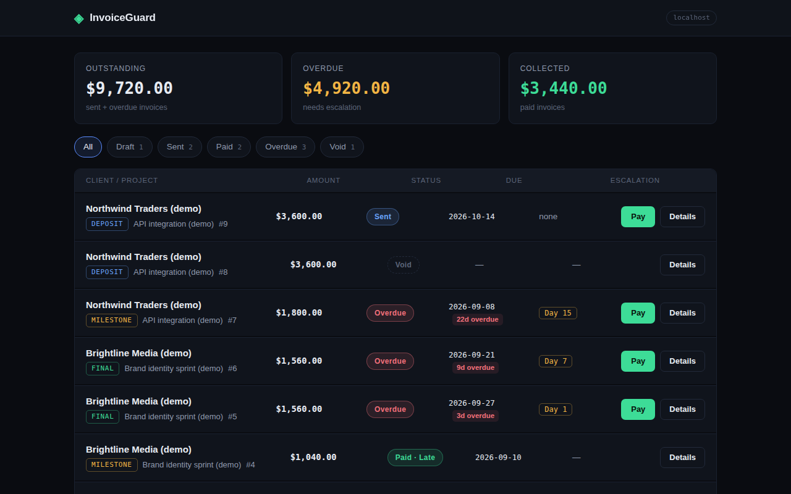
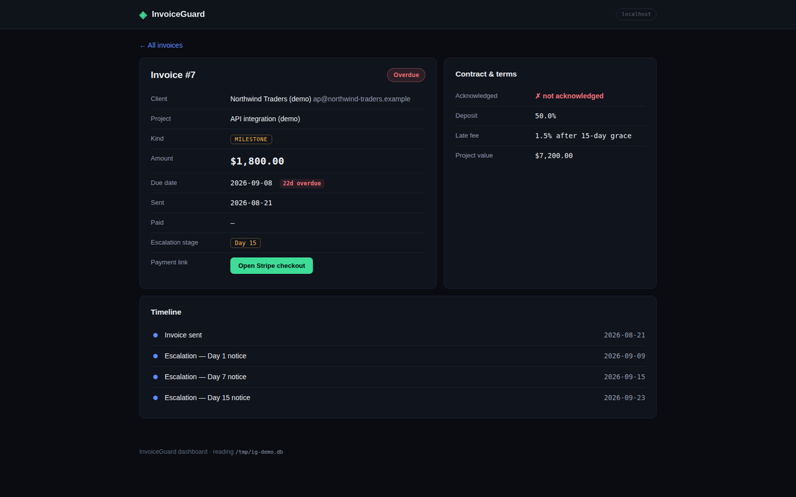

User guide
Dashboard
On this page
invoiceguard dashboard # http://127.0.0.1:8000/
invoiceguard dashboard --port 8080
A small FastAPI + Jinja2 web UI that shares the CLI's SQLite database. Binds to 127.0.0.1 by default (localhost only). The API docs (/docs, /redoc) are disabled.
Pages
GET /— invoice list with status filters (draft,sent,paid,overdue,void), totals (outstanding / overdue / collected), and per-status counts. Each row shows the invoice kind, amount, project, due date, and current escalation stage.GET /invoices/{id}— invoice detail: amount, status, Stripe payment link, due date, and a chronological timeline of dunning events.GET /healthz—{"ok": true}, for uptime checks.POST /webhooks/stripe— the Stripe webhook receiver (see Webhooks).
Unknown status filters and missing invoices return a 404 page.
Screenshots
Captured from the real dashboard running locally against seeded demo data (every sample name is labeled (demo)):

Invoice list — status filters, totals, and escalation stages.

Invoice detail — timeline of dunning events.
Notes
- The dashboard never inserts data on startup — it creates empty tables if the DB is fresh, nothing more.
- It reads and writes the same tables as the CLI; column names and types are frozen (additive migrations only). See Database.
- Webhook verification needs the signing secret — resolution order is documented in Webhooks. Without a real secret,
POST /webhooks/stripereturns HTTP 500.